Префектура Окинава · остров Окинава · еда
Что едят сами окинавцы: американские сэндвичи, суп из утки и чёрная соба
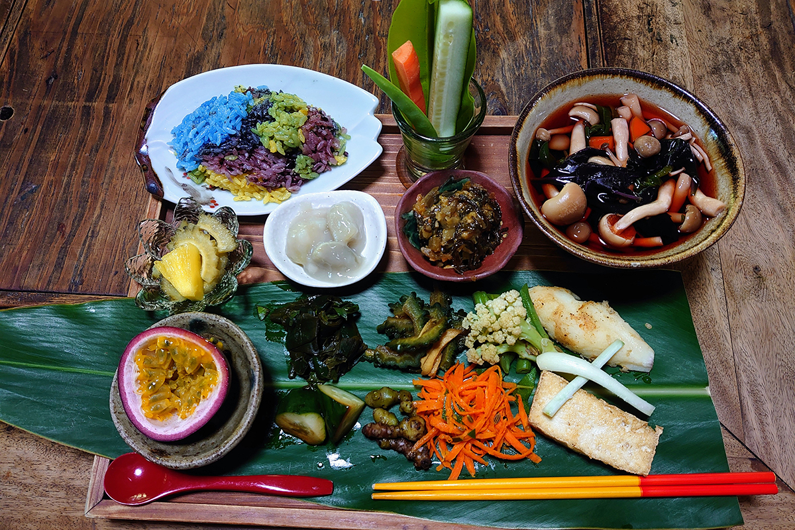
Кухня Окинавы гораздо шире окинавской собы: здесь есть и свои старые блюда, и мексиканская или американская еда, которая за полвека стала местной. Трое жителей острова рассказывают, куда ходят сами и что везут друзьям.
Кодза
Глава торгового центра: «наша еда всё-таки американская»
Первая рассказчица руководит торговым центром «Плаза-хаус» в городе Окинава. Его открыли в те годы, когда Окинава находилась под управлением США, и считают первым торговым центром в Японии. Она возглавляет компанию в пятом поколении. В продуктовом магазине центра, «Роджерс фуд маркет», продают импортные продукты и вкусные вещи со всей Японии, но интереснее всего ей то, что делают на самом острове, а не большие национальные марки.
Она родилась в Кодза, районе города Окинава рядом с американской базой, и местные называют таких людей «кодзантю». Для них, по её словам, родная еда скорее американская. Сеть фастфуда A&W пришла на Окинаву из США около 60 лет назад, и её любимое блюдо там «хам-чиз сэндвич»: ветчина и сыр в хлебе, поджаренном на плите.
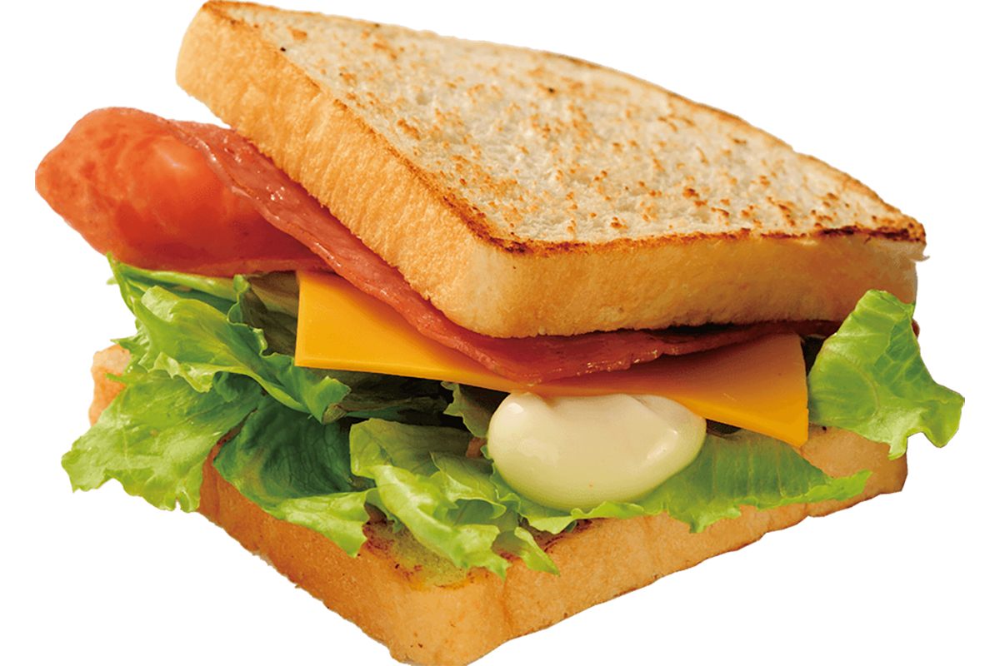
Мексиканский ресторан «Обригадо Ёмитан» когда-то стоял в посёлке Кадэна. Она начала ходить туда, когда познакомилась с основателем, который к тому же художник. Ресторану 47 лет, и он стал очень окинавским: на местные праздники здесь заказывают целые блюда тако. Её выбор «карнитас», свинина с глубоким вкусом, а простой домашний соус не меняется много лет, и от него становится спокойно на душе.
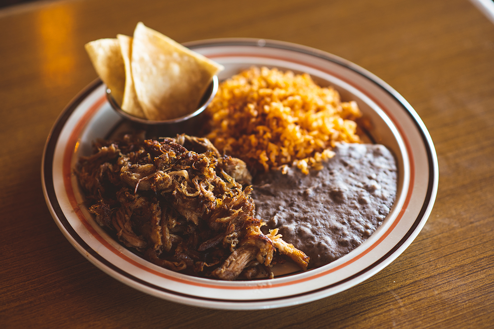
По работе ей интересны блюда из продуктов, овощей и трав местных фермеров. Поэтому она советует «Кафе Гарамандзяку» в посёлке Кин, известное место лечебной кухни, которое работает только по выходным. Рецепты из окинавских диких трав придумала покойная исследовательница лечебного питания, а теперь их готовит её дочь. На Окинаве говорят «нутигусуй»: еда это лекарство для жизни. В старом деревенском доме, где едят тихо и бережно, по её словам, видны корни окинавской кухни, которые нельзя потерять. Рассказчица признаётся, что вообще-то не очень хотела выдавать это место.
Первой заграницей в её жизни был Бали. Там она встретила старую женщину, похожую на её бабушку, а лица у местных женщин были совсем окинавские. На Бали тоже есть блюдо «чампуру», там тоже едят в основном свинину. Звуки гамелана, цветы, влажный воздух и морской ветер напомнили ей Окинаву старых времён. Так в «Плаза-хаус» появился ресторан BALI NOON BALI MOON: повара, переехавшие с Бали, готовят балийские блюда из окинавских продуктов, вроде мимиги (свиных ушей) и горькой тыквы гоя, с бумбу бали, имбирной пастой из пряностей и трав.
Что увезти
Сувенир, который ей самой нравится в последнее время, это мёд «Мияко-мицу» с острова Мияко. Пчёл там держат без подкормки и лекарств, мёд не нагревают, не очищают и ничего в него не добавляют. Достать его трудно, а пахнет он цветами череды волосистой. Мёд продают в «Роджерс фуд маркет», но он быстро заканчивается.
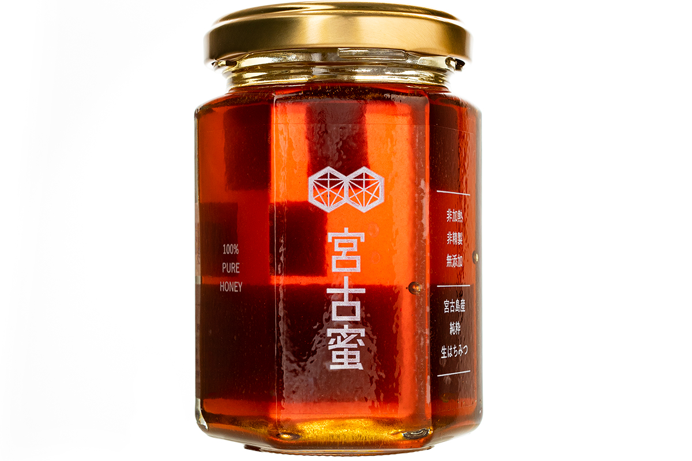
В том же магазине продают чёрный сахар с острова Хатэрума, смешанный с фирменными пряностями, HATILUMA CRUZ: его кладут в чай, масалу и тушёные блюда. Фирменная помадка «Плаза-хаус» придумана по мотивам британского фаджа, только белый сахар заменён чёрным. Вкусов четыре: имбирь, танкан (окинавский мандарин), ром и простой. Маленький кубик сладкий ровно настолько, чтобы снять усталость.
A&W
- Сайт
- awok.co.jp
«Обригадо Ёмитан»
- Адрес
- префектура Окинава, район Накагами, посёлок Ёмитан, Фуругэн, 497-1
- Телефон
- +81 98-956-7420
«Кафе Гарамандзяку»
- Адрес
- префектура Окинава, район Кунигами, посёлок Кин, Кин, 10507-4
- Телефон
- +81 98-968-8846
- Часы работы
- только по выходным
BALI NOON BALI MOON
- Адрес
- префектура Окинава, город Окинава, Кубота, 3-1-12
- Телефон
- +81 98-933-1144
«Роджерс фуд маркет»
- Адрес
- префектура Окинава, город Окинава, Кубота, 3-1-12
- Телефон
- +81 98-932-4484
Повара
Организатор фуд-фестиваля: блюдо из крови и друзья-повара
Второй рассказчик переехал на Окинаву из Киото и держит якитори-бар в посёлке Тятан. После землетрясения 2011 года он стал думать, что повар может сделать для своей округи, и в 2014 году запустил продуктовую ярмарку OKINAWA FOOD FLEA. Сегодня это крупнейший фуд-фестиваль на Окинаве. В посёлке Гиноза он ведёт ещё и кафе при придорожной станции.
На острове он живёт 17 лет, и родным блюдом готов назвать «ти-иритя» из «Хисамацу сёкудо» в посёлке Кин. «Ти» значит кровь, «иритя» значит тушить после обжарки. Про Окинаву говорят, что у свиньи здесь едят всё, кроме голоса. Однажды из-за санитарных правил свежую свиную кровь чуть не перестали продавать, и он считает, что эту привычку не тратить жизнь впустую надо сохранить.
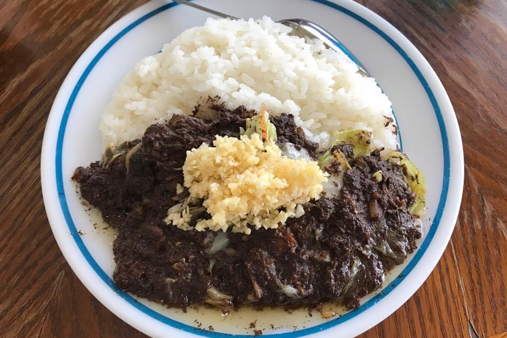
Редкость другого рода «Ахиру-тэй» в городе Окинава, где местная пожилая хозяйка варит суп из утки. Вкус понравится не всем, но тем, кто хочет попробовать по-настоящему местную еду, он советует зайти.
Друзей среди поваров у него так много, что выбрать трудно. На Окинаве, по его словам, много людей, которые всей душой любят готовить. Он назвал места, куда хотел бы привести друзей с большой земли. С хозяином бистро BISTRO bom bà его давно связывает любовь к музыке: здесь готовят из сезонных продуктов и наливают натуральное вино, и он приходит туда с друзьями и своими пластинками.
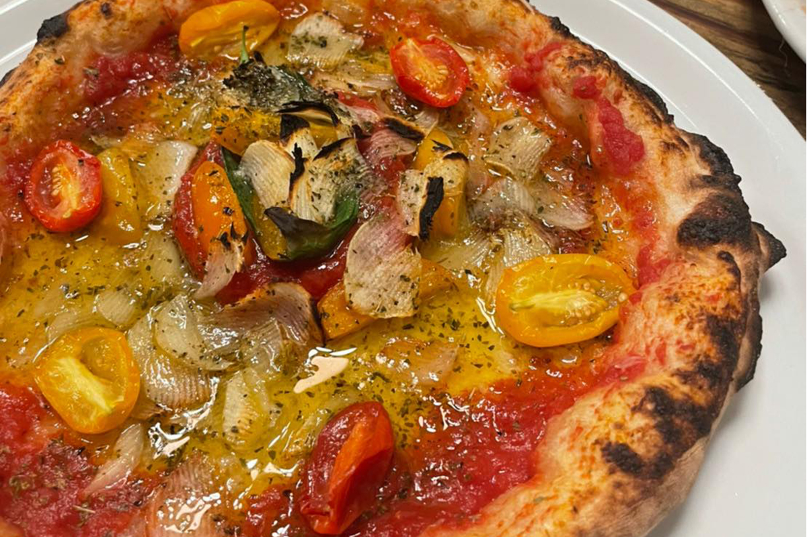
В Bacar в Нахе отличная не только пицца, но и вся остальная итальянская кухня. Ещё он называет винное бистро «Като сёкудо», где всегда собирается весёлая компания, GOOD DAY COFFEE с хорошими завтраками и кофе и мексиканский TACO PETES, где по выходным особенно шумно.
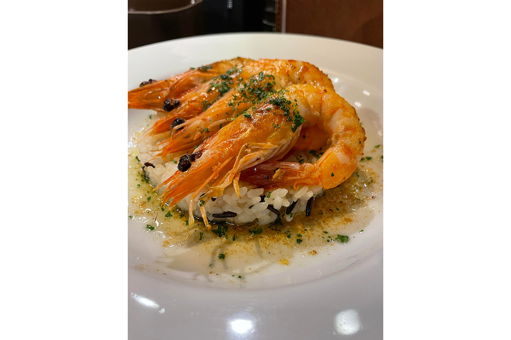
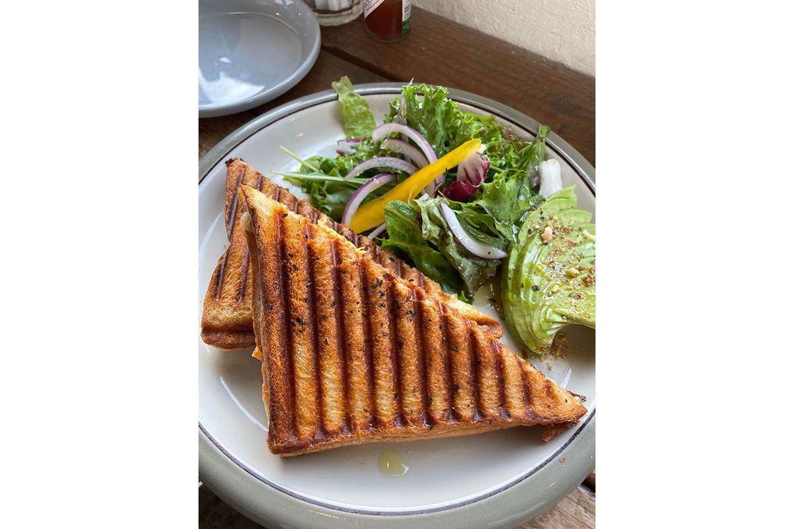
Тинсуко и бананы
Из сувениров он советует «Аракаки тинсуко хомпо», у которого есть магазины в Сюри (район Самукава) и в Тамагусуку города Нандзё. До переезда он думал, что тинсуко, окинавское песочное печенье, лучше дарить с шоколадом, а не простое. Здесь простое оказалось особенным, особенно сразу после того, как откроешь пачку. В рисунках на упаковке и в истории магазина чувствуется история Рюкю.
Он твёрдо верит, что еда это главное богатство Окинавы для путешественников: сильная природа даёт сильные и вкусные продукты. Сам он начал выращивать бананы в Гинозе и хочет, чтобы они стали местной маркой посёлка.
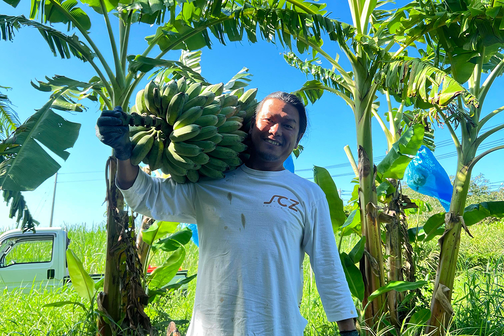
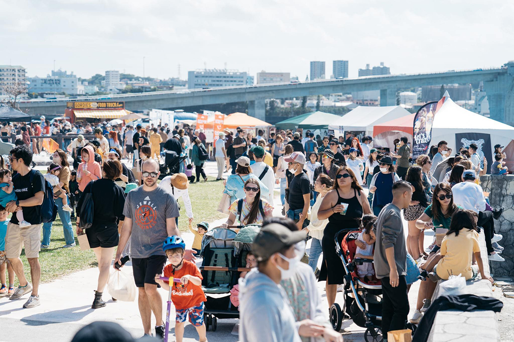
«Хисамацу сёкудо»
- Адрес
- префектура Окинава, район Кунигами, посёлок Кин, Кин, 41
- Телефон
- +81 98-968-2987
«Ахиру-тэй»
- Адрес
- префектура Окинава, город Окинава, Накасонэ, 5-3
- Телефон
- +81 98-929-1333
BISTRO bom bà
- Адрес
- префектура Окинава, район Накагами, посёлок Тятан, Михама, 9-21, здание Depot Island Seaside, 5-й этаж
- Телефон
- +81 98-987-8377
Bacar
- Адрес
- префектура Окинава, Наха, Кумодзи, 3-16-15
- Телефон
- +81 98-863-5678
«Като сёкудо»
- Адрес
- префектура Окинава, город Гинован, Масики, 2-16-10
- Телефон
- +81 98-890-2055
GOOD DAY COFFEE
- Адрес
- префектура Окинава, район Накагами, посёлок Тятан, Хамагава, 178-1
- Телефон
- +81 90-4470-1173
TACO PETES
- Адрес
- место меняется, смотрите Instagram @tacopetes_okinawa
«Аракаки тинсуко хомпо»
- Адрес
- префектура Окинава, Наха, Сюри-Самукава-тё, 1-81-8
- Телефон
- +81 98-886-6236
Цубоя
Жена гончара: чёрная соба и сладости на каждый день
Третья рассказчица отвечает за связи с публикой в мастерской Ikutouen. Эта гончарная мастерская работает в Цубоя около 300 лет, а её муж представляет седьмое поколение. Сама она родом из города Ина в префектуре Нагано. Мастерская делает ятимун, окинавскую керамику, из местной глины и глазурей, традиционными приёмами и узорами, и держит пять магазинов, в том числе nan*ne.
На Окинаву она приехала студенткой по обмену, встретила будущего мужа, а о вкусных местах узнала от его родителей. Её родное блюдо это соба с чернилами каракатицы в «Сюрэй соба». Возвращаясь с большой земли, она первым делом едет туда, и когда губы чернеют от чернил, чувствует: я дома. Она советует и фирменную «Сюрэй собу», и «юси-дофу собу» с мягким тофу, и «наками-собу» со свиными потрохами.
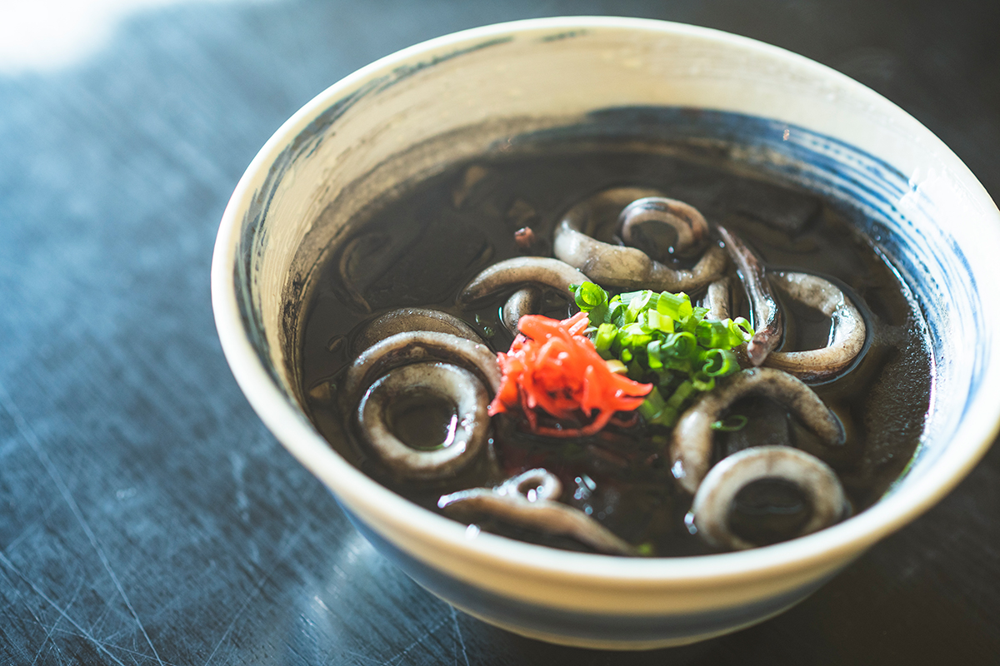
В кафе «Утина-тяя Букубуку», по соседству с мастерской, ей нравится большая порция дзэндзая, сладких бобов, в посуде ятимун. Бобы хозяин покупает у торговца на рынке и долго варит.
Когда она только переехала в Цубоя, они с мужем часто брали навынос тако-райс в «Акатомбо». А тэмпуру из «Цубоя тэмпура» любила покойная бабушка мужа. И то и другое хорошо к чаю: если принести в мастерскую, все улыбаются, а тэмпуру здесь едят с вустерским соусом.
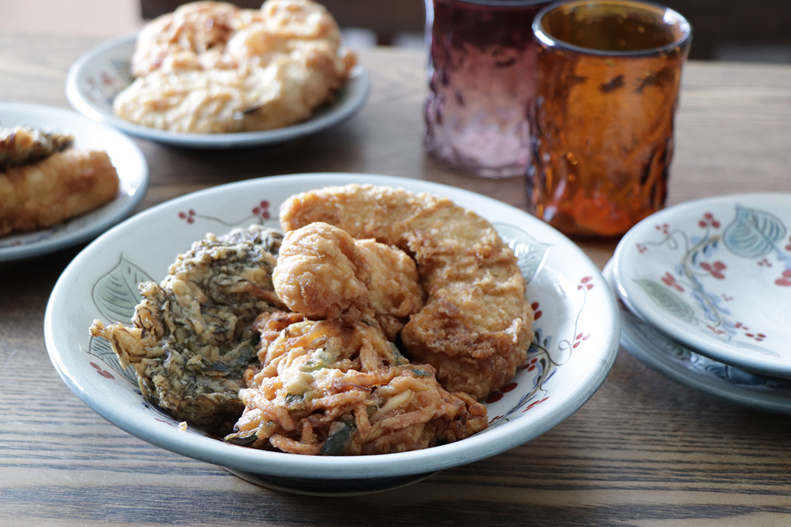
Сладкое и американское
Из сладкого она чаще всего берёт тайваньский дзэндзай и молочный чай из улуна «Ао-тя» в «Сасоридза». Кафе держит семья с Тайваня, и она ходит сюда со студенческих лет, задолго до моды на тапиоку. Вкус мягкий, и чаёв много.
На дни рождения свёкор всегда покупает «немецкий торт» в кондитерской «Тоэ», а без шоколадного торта в шоколадной посыпке из кондитерской «Алоха» тоже не обходится. По дороге на север она всегда заезжает в пекарню «Риндон» в Наго: домашние джемы и кремы, сладкие и несладкие булочки, а багет она берёт сразу и на завтра.
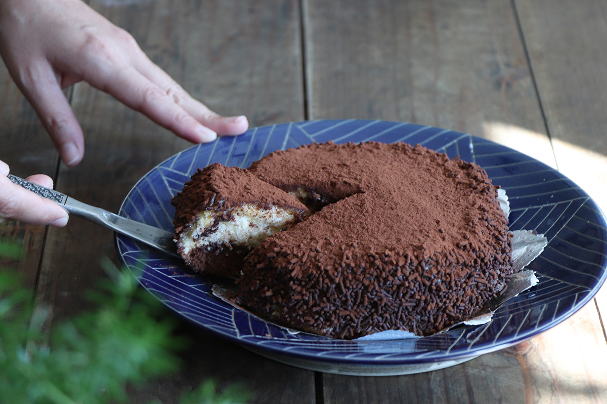
Друзей с большой земли она ведёт туда, где видна Окинава. В BLUE SEAL заказывает яблочный пирог с мороженым: тёплый пирог, большой шар ванильного мороженого и много сладкого соуса. Его продают только в кафе марки, и когда она впервые попробовала его, почувствовала «американскую Окинаву».
В «Паб-лаундж Эмеральд» подают огромные стейки, а в зале смешались Америка и японская ретро-эпоха Сёва. В Rose Garden с утра собираются люди, которые работают на базе: яйца бенедикт американского размера, хрустящий бекон и кофе, который подливают сколько захочешь.
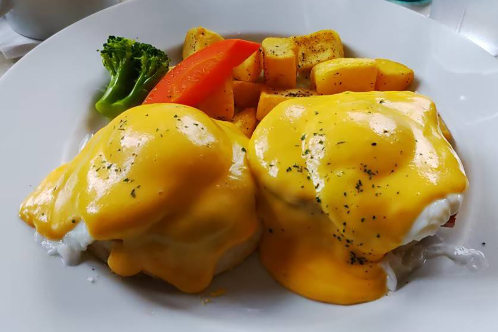
В подарок она берёт безглютеновую смесь для панкейков HYGGE. Её делает пекарня запечённых пончиков из сорго и муки бурого риса с острова Хатэрума, и панкейки получаются тягучими, с хрустящими зёрнышками. Смесь продают в HYGGE в районе Ояма города Гинован и в nan*ne. Напротив HYGGE стоит импортный супермаркет Jimmy's: его большое печенье с кусочками шоколада такое сытное, что она покупает его в аэропорту каждый раз, когда летит к родителям.
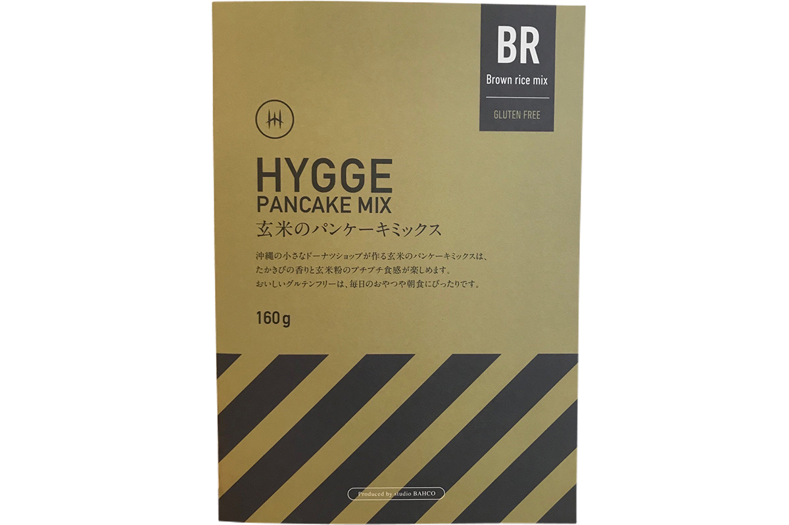
«Сюрэй соба»
- Адрес
- префектура Окинава, Наха, Такара, 3-7-27
- Телефон
- +81 98-859-1155
«Акатомбо»
- Адрес
- префектура Окинава, Наха, Мацуо, 2-21-16
- Телефон
- +81 98-866-9535
«Цубоя тэмпура»
- Адрес
- префектура Окинава, Наха, Цубоя, 2-24-12
- Телефон
- +81 98-836-6781
«Сасоридза»
- Адрес
- префектура Окинава, Наха, Нагата, 1-24-13
- Телефон
- +81 98-836-5779
Кондитерская «Тоэ»
- Адрес
- префектура Окинава, Наха, Ёги, 1-8-13
- Телефон
- +81 98-854-4707
Кондитерская «Алоха»
- Адрес
- префектура Окинава, Наха, Сюри-Исимминэ-тё, 2-90-21
- Телефон
- +81 98-885-6456
«Риндон»
- Адрес
- префектура Окинава, Наго, Оминами, 2-5-10
- Телефон
- +81 980-52-0237
BLUE SEAL
- Сайт
- blueseal.co.jp
«Паб-лаундж Эмеральд»
- Адрес
- префектура Окинава, район Накагами, село Китанакагусуку, Симабукуро, 311
- Телефон
- +81 98-932-4263
Rose Garden
- Адрес
- префектура Окинава, район Накагами, село Китанакагусуку, Ягибару, 165-1
- Телефон
- +81 98-932-2800
HYGGE
- Адрес
- префектура Окинава, город Гинован, Ояма, 2-23-1
- Телефон
- +81 90-1947-0002
Jimmy's
- Сайт
- jimmys.co.jp
Фото: Цунэтака Симабукуро.